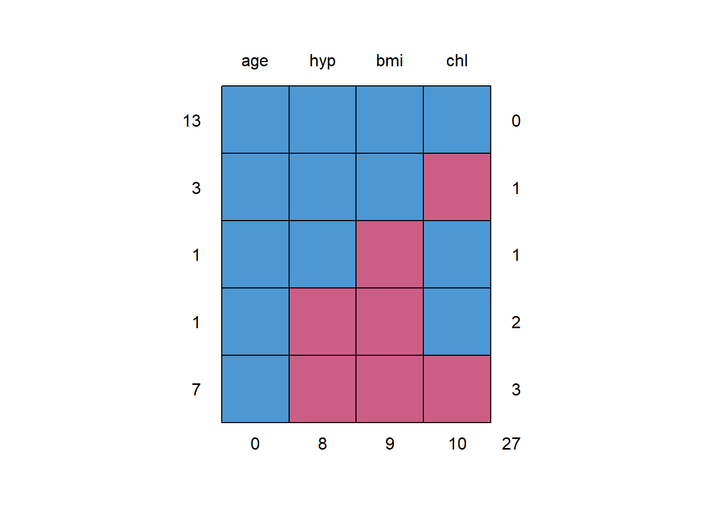

4 Multivariate Imputation by Chained Equations (MICE)
4.1 The mice package
The mice package implements a method to deal with missing data. The package creates multiple imputations (replacement values) for multivariate missing data. The method is based on Fully Conditional Specification, where each incomplete variable is imputed by a separate model. The
micealgorithm can impute mixes of continuous, binary, unordered categorical and ordered categorical data. In addition,micecan impute continuous two-level data, and maintain consistency between imputations by means of passive imputation. Many diagnostic plots are implemented to inspect the quality of the imputations.
Winnipeg workshop: Handling missing data in R with mice
library(tidyverse)
library(mice)?nhanesnhanes## age bmi hyp chl
## 1 1 NA NA NA
## 2 2 22.7 1 187
## 3 1 NA 1 187
## 4 3 NA NA NA
## 5 1 20.4 1 113
## 6 3 NA NA 184
## 7 1 22.5 1 118
## 8 1 30.1 1 187
## 9 2 22.0 1 238
## 10 2 NA NA NA
## 11 1 NA NA NA
## 12 2 NA NA NA
## 13 3 21.7 1 206
## 14 2 28.7 2 204
## 15 1 29.6 1 NA
## 16 1 NA NA NA
## 17 3 27.2 2 284
## 18 2 26.3 2 199
## 19 1 35.3 1 218
## 20 3 25.5 2 NA
## 21 1 NA NA NA
## 22 1 33.2 1 229
## 23 1 27.5 1 131
## 24 3 24.9 1 NA
## 25 2 27.4 1 186tibble::glimpse(nhanes)## Rows: 25
## Columns: 4
## $ age <dbl> 1, 2, 1, 3, 1, 3, 1, 1, 2, 2, 1, 2, 3, 2, 1, 1, 3, 2, 1, 3, 1, ...
## $ bmi <dbl> NA, 22.7, NA, NA, 20.4, NA, 22.5, 30.1, 22.0, NA, NA, NA, 21.7,...
## $ hyp <dbl> NA, 1, 1, NA, 1, NA, 1, 1, 1, NA, NA, NA, 1, 2, 1, NA, 2, 2, 1,...
## $ chl <dbl> NA, 187, 187, NA, 113, 184, 118, 187, 238, NA, NA, NA, 206, 204...summary(nhanes)## age bmi hyp chl
## Min. :1.00 Min. :20.40 Min. :1.000 Min. :113.0
## 1st Qu.:1.00 1st Qu.:22.65 1st Qu.:1.000 1st Qu.:185.0
## Median :2.00 Median :26.75 Median :1.000 Median :187.0
## Mean :1.76 Mean :26.56 Mean :1.235 Mean :191.4
## 3rd Qu.:2.00 3rd Qu.:28.93 3rd Qu.:1.000 3rd Qu.:212.0
## Max. :3.00 Max. :35.30 Max. :2.000 Max. :284.0
## NA's :9 NA's :8 NA's :10df_nhanes <- nhanes %>%
dplyr::mutate(age = factor(age,
levels = c(1, 2,3),
labels = c("20-39", "40-59", "60+"))) %>%
dplyr::mutate(hyp = factor(hyp,
levels = c(1, 2),
labels = c("no", "yes")))summary(df_nhanes)## age bmi hyp chl
## 20-39:12 Min. :20.40 no :13 Min. :113.0
## 40-59: 7 1st Qu.:22.65 yes : 4 1st Qu.:185.0
## 60+ : 6 Median :26.75 NA's: 8 Median :187.0
## Mean :26.56 Mean :191.4
## 3rd Qu.:28.93 3rd Qu.:212.0
## Max. :35.30 Max. :284.0
## NA's :9 NA's :10mice::md.pattern(df_nhanes)
## age hyp bmi chl
## 13 1 1 1 1 0
## 3 1 1 1 0 1
## 1 1 1 0 1 1
## 1 1 0 0 1 2
## 7 1 0 0 0 3
## 0 8 9 10 274.2 multiple impute the missing values
imp <- mice::mice(data = df_nhanes, #name of dataset
m = 4, # number of copies
seed = 432)##
## iter imp variable
## 1 1 bmi hyp chl
## 1 2 bmi hyp chl
## 1 3 bmi hyp chl
## 1 4 bmi hyp chl
## 2 1 bmi hyp chl
## 2 2 bmi hyp chl
## 2 3 bmi hyp chl
## 2 4 bmi hyp chl
## 3 1 bmi hyp chl
## 3 2 bmi hyp chl
## 3 3 bmi hyp chl
## 3 4 bmi hyp chl
## 4 1 bmi hyp chl
## 4 2 bmi hyp chl
## 4 3 bmi hyp chl
## 4 4 bmi hyp chl
## 5 1 bmi hyp chl
## 5 2 bmi hyp chl
## 5 3 bmi hyp chl
## 5 4 bmi hyp chlimp## Class: mids
## Number of multiple imputations: 4
## Imputation methods:
## age bmi hyp chl
## "" "pmm" "logreg" "pmm"
## PredictorMatrix:
## age bmi hyp chl
## age 0 1 1 1
## bmi 1 0 1 1
## hyp 1 1 0 1
## chl 1 1 1 0mice::stripplot(imp, chl,
pch = 19,
xlab = "Imputation number")
fit_lm_orig <- lm(chl ~ age + bmi + hyp,
data = df_nhanes)summary(fit_lm_orig)##
## Call:
## lm(formula = chl ~ age + bmi + hyp, data = df_nhanes)
##
## Residuals:
## Min 1Q Median 3Q Max
## -34.054 -17.670 0.599 7.157 56.611
##
## Coefficients:
## Estimate Std. Error t value Pr(>|t|)
## (Intercept) -35.677 63.245 -0.564 0.58815
## age40-59 59.543 22.947 2.595 0.03187 *
## age60+ 109.458 30.437 3.596 0.00702 **
## bmi 7.160 2.201 3.253 0.01164 *
## hypyes -7.692 25.179 -0.305 0.76779
## ---
## Signif. codes: 0 '***' 0.001 '**' 0.01 '*' 0.05 '.' 0.1 ' ' 1
##
## Residual standard error: 30.69 on 8 degrees of freedom
## (12 observations deleted due to missingness)
## Multiple R-squared: 0.736, Adjusted R-squared: 0.604
## F-statistic: 5.575 on 4 and 8 DF, p-value: 0.019164.3 Run the model on each imputate datset
fit_lm_imp <- with(imp, lm(chl ~ age + bmi + hyp))fit_lm_imp## call :
## with.mids(data = imp, expr = lm(chl ~ age + bmi + hyp))
##
## call1 :
## mice::mice(data = df_nhanes, m = 4, seed = 432)
##
## nmis :
## age bmi hyp chl
## 0 9 8 10
##
## analyses :
## [[1]]
##
## Call:
## lm(formula = chl ~ age + bmi + hyp)
##
## Coefficients:
## (Intercept) age40-59 age60+ bmi hypyes
## -47.728 49.231 79.355 7.915 -13.321
##
##
## [[2]]
##
## Call:
## lm(formula = chl ~ age + bmi + hyp)
##
## Coefficients:
## (Intercept) age40-59 age60+ bmi hypyes
## -16.836 39.658 94.646 7.111 -10.672
##
##
## [[3]]
##
## Call:
## lm(formula = chl ~ age + bmi + hyp)
##
## Coefficients:
## (Intercept) age40-59 age60+ bmi hypyes
## -46.254 38.224 74.157 7.954 -10.657
##
##
## [[4]]
##
## Call:
## lm(formula = chl ~ age + bmi + hyp)
##
## Coefficients:
## (Intercept) age40-59 age60+ bmi hypyes
## -67.492 63.237 87.428 8.498 -26.1264.4 pool the results into one set of results
fit_lm_pooled <-mice::pool(fit_lm_imp)summary(fit_lm_pooled)## term estimate std.error statistic df p.value
## 1 (Intercept) -44.577509 56.661924 -0.7867278 13.236591 0.4452990545
## 2 age40-59 47.587598 22.135340 2.1498472 8.263892 0.0627134958
## 3 age60+ 83.896675 22.382219 3.7483628 12.144420 0.0027243689
## 4 bmi 7.869366 1.902815 4.1356439 15.162355 0.0008619285
## 5 hypyes -15.193758 18.716802 -0.8117711 12.387123 0.4322460843